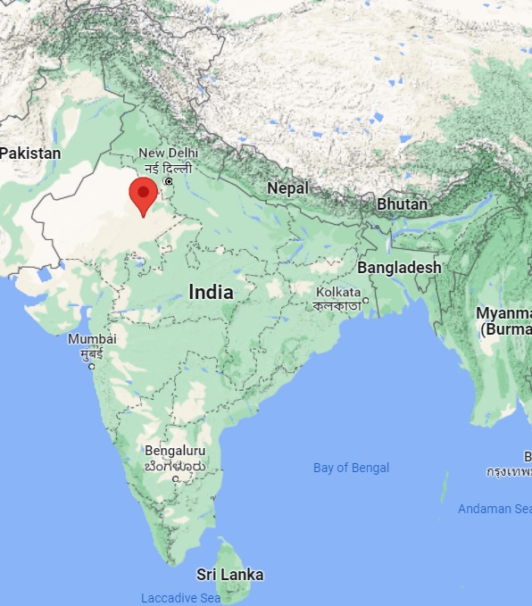

By Airways: Sanganer airport is the nearest airport to the city of Jaipur. It is located at a distance of 10 kilometers from the city centre. The airport has flight connectivity with major Indian cities like Mumbai and Delhi. International tourists can take connecting flights to Jaipur from Mumbai or Delhi airport.
By Roadways: Jaipur has good network of roads connecting it with major Indian cities. NH 8, NH 11 and NH 12 are the main national highways connecting the city of Jaipur with other cities. National capital New Delhi is just 235 KM from this beautiful city while the city of the Taj Mahal, Agra, is only 220 KM from here. Other important cities include Ajmer at 130 KM, Mathura at 196 KM and Gwalior at 250 KM. There are good services of Buses and Cabs available like buses from Jaipur to Delhi.
By Railways: The railway junction at Jaipur connects it with various cities. For a royal experience one can take the Palace on Wheels. This train leaves from Delhi and connects various cities in Rajasthan.
By Airways: The nearest airport is at Bhuntar, located approximately 50 kilometres away from Manali. Domestic flights connect Bhuntar with Delhi and Chandigarh. Once at the airport, you can take a pre-paid taxi to Manali.
By Roadways: Manali is very well-connected to important tourist destinations like Leh, Shimla, Kullu, Dharamshala and New Delhi by means of a network of state-run as well as private buses. The bus journey from Delhi to Manali is 550 kilometres, and it is advisable to book your tickets in the air-conditioned Volvo coaches, as the buses are more comfortable than ordinary ones, keeping in mind the long distance of the journey
By Railways: The closest train station to Manali is Ambala Cantt, which is 200 km away. Another option is to get a train to Chandigarh, which is 250 km away. Ambala Cantt is on the Delhi Amritsar route. Even trains going to Jammu may stop at Ambala Cantt from where you will have to take a bus or a car for your onward journey, which is approximately 10 hours to Manali.
By Airways: Kochi has its own airport, named the Cochin International Airport, situated 20 km away at Nedumbassery. The international and domestic flights available here connect you to different parts of the globe.
By Roadways: Kochi is well-connected to its nearby cities and other states. Trips to Kochi from major cities like Mumbai, Mangalore, Bangalore, Chennai, Goa, and Kozhikode can be easily planned via road.
By Railways: The main railway station is Kochi railway junction, while the other station is at Kochi Harbor Terminus. By rail, Kochi is linked with important cities like Delhi, Mumbai, and Chennai.
By Airways: Guwahati Airport, or Lokpriya Gopinath Bordoloi International Airport, situated 25 km away from the main city, links the destination with all prime Indian cities. Regular flight options are available by carriers such as GoAir, Air India, AirAsia India, and Jet Airways for cities such as Kolkata, Bagdogra, Imphal, Delhi, Bangalore, Agartala and Mumbai, among others. Travellers can avail bus or prepaid taxi services to reach desired destination in Guwahati.
By Roadways: Guwahati is very well connected with the adjoining cities and states through bus service. The three nodal points of Adabari, Paltan Bazar and ISBT Guwahati, provide bus services to towns and cities in Assam and adjoining states.
By Railways: Guwahati Junction is the major railway station of Guwahati. Kamakhya Junction is the second largest station of the city. Guwahati is well connected with all the major cities of the country through rails. From the railways station, you can hire a cab/taxi or board a local bus to get to the city centre or to your hotel.
By Helicopter: Pawan Hans, a helicopter service provider, provides helicopter services from Guwahati to Shillong (30 min), Tura (50 min), Naharlagun (Itanagar), Tawang (75 min) and vice versa.